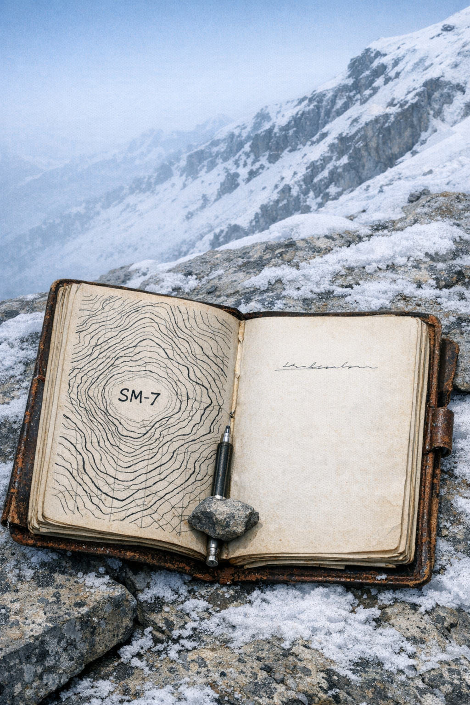

The Vilcabamba Expedition
The Vilcabamba Expedition
The Bottom of the List
The platform at Cusco station was empty at twenty past four in the morning except for a dog sleeping against the stationmaster’s door and two porters who unloaded baggage in silence and went away. Holroyd stepped down with his cartridge case of survey instruments and stood while the train collected itself and moved on. The cold came through immediately — eleven thousand feet, the dry season, the last week of August — and he felt it the way he always felt high altitude after weeks at sea level: the lungs registering the first few breaths as insufficient and then making a slow, reluctant adjustment.
He had come from Arequipa. Before that, Callao and the coast. Before that, three months of Lima hotel rooms paid on a Peruvian government contract that had run out in May and no other offer until Finch’s cable arrived in June. He was aware he was the fourth name on Finch’s list. He had not asked directly, but Finch was not a man who concealed his priorities, and the tone of the cable — the careful absence of enthusiasm — was its own information. Holroyd. Know your India situation. Aware this is unconventional. The fee covers three months of outstanding obligations at minimum. Prepared to discuss terms if amenable and in Peru. He had cabled back: Amenable. In Lima. That was the whole negotiation. The first man on the list had died of something Finch did not specify. The second and third had declined, which told Holroyd something about how Finch had described the expedition to them. He found none of this humiliating. He found it accurate.
He shifted the cartridge case to his left hand and walked out of the station into the dark.
The San Pedro market district ran southeast of the Inca stonework on Calle Santa Clara, and at five in the morning it was already moving in a pre-commercial way — porters repositioning crates, stall-keepers arranging their stock before buyers arrived, woodsmoke from under the arcade where vendors were heating water. The cobblestones were still wet from the previous night. The smell was woodsmoke and mule and something vegetable. Holroyd was counting loads in his head as he walked: four mules, 80-pound ataditos per side, food stores against equipment against rope and tent canvas and stove fuel. He had run the arithmetic in Lima and again on the train, and the numbers balanced. Whether the actual loads on actual mules would match the arithmetic was always another matter.
Isobel Carrow was at the provisions depot when he got there. He had not arranged to meet her before six, but she was there in a grey wool jacket with her pack already assembled at her feet, talking to the stall-keeper in Quechua with the focused patience of someone who was nearly finished with an argument she had begun forty minutes ago. She looked up, registered Holroyd, said something to the stall-keeper that ended the conversation, and crossed the space between them.
“The coca leaf order is short,” she said. “Fifteen pounds arrived instead of thirty-one.”
Holroyd set down the cartridge case. “Short from the Lima contact or short on arrival?”
“Short in the order. The Lima contact specified fifteen. I have thirty-one pounds sitting on a cart behind the stall.”
“You corrected it.”
“Yes. Bought sixteen pounds from Señora Mamani here” — a nod toward the stall-keeper, who had returned to stacking sacks — “who I’ve bought from three times before. I’ll want the cost back.”
“How much.”
She told him. He took out his field notebook — cloth-bound, the corners worn soft — and wrote the figure and the date. He said: “Fine.”
She watched him write it down. He had the sense she was deciding something, but her face did not announce what. She said: “The chuño is all here. The sardines are short two tins.” She held up the invoice. “I have it noted.”
Holroyd said: “Why does thirty-one pounds of coca leaf matter.”
“Above fifteen thousand feet, the men either have it or they stop working. The arithmetic is simple.” A pause. “Also your porters.”
“Mariano’s men.”
“Yes.”
“What did Mariano say about the shortage.”
“I haven’t told him yet. I thought I’d wait until we had something to tell.”
He looked at her briefly. Twenty-seven, as he had been told, with real mountain experience behind her — three field seasons with her father in the Urubamba valley, two stints with survey parties, and the language competence that was the whole reason Finch had found her name. Her father had died six weeks ago. Finch had mentioned it not as a reservation but as a logistical consideration he had decided to absorb. Holroyd had not raised it with her, and she had not raised it with him.
He said: “Good.”
Mariano Quispe arrived at the market at quarter past six with four mules and two men behind him. The mules were better than Holroyd expected — not the underfed animals of the hire yards but animals that had been worked and fed correctly, with the settled quality of mules that knew their handler. Mariano was relashing a load on the second mule when Holroyd reached him. He did not look up. His hands worked the hitch methodically — checking the balance against the opposite atadito, adjusting, retying — and he finished and tested the knot twice before he straightened.
Holroyd said: “Quispe.”
Mariano said: “Holroyd.” He extended his hand. They shook.
Thirty-eight, which matched Holroyd’s estimate. Built for uphill work — compact through the chest, nothing extra carried anywhere — with the economy of movement that came from twenty years of knowing exactly how far each step needed to go. A rope scar ran across the back of his left hand, old and smooth. Holroyd’s surveyor’s eye catalogued it and moved on. The mules tracked Mariano with the particular attention of animals that had decided which person in a crowd was responsible for them.
The two arrieros behind him were Cleto and Rufino, from Mariano’s Yanatile valley. Cleto was perhaps thirty-five, broad-shouldered, with an experienced eye on the loads. Rufino was younger — Holroyd put him at twenty, which was lower than the correspondence had implied — and he was handling the rear mule with more confidence than his age predicted. He was Mariano’s hire, Mariano’s judgment. He would work the lower approach and turn back at the snowline with the pack mules. Holroyd noted his age and set it beside the rope scar, two items in a ledger he had not yet opened.
They loaded the food stores while the market came fully alive around them. Isobel directed the atadito balancing, Mariano adjusted once and then twice without comment, and she did not object — which told Holroyd something about the history between them. By half past seven the mules were packed and the whole party moved south through the thinning market toward the road.
They stopped at a tienda near the road junction for a meal. Three tables, a charcoal brazier against the wall, a proprietor who brought bread and sardines and coca tea without being asked. No alcohol — Holroyd had made this clear in the correspondence and neither Isobel nor Mariano had argued it. He poured the coca tea and left it to steep and opened one of the sardine tins.
Mariano was outside with the mules. Cleto and Rufino sat at the next table. Isobel took a sardine and a piece of bread and ate standing, watching the door.
A boy came in and asked in accented Spanish for the English woman. Isobel took the note from him, read it standing, set it on the table.
“A trader came through the Yanatile trailhead two days ago,” she said. “He saw a German party of four cross the trailhead heading east. Heavy loads, good rope, his words. He counted sixteen days ago.”
Holroyd put down his tin. He did the subtraction. He had expected a gap — Finch’s cable had said German party en route, do not delay — but he had assumed his timeline out of Lima was fast enough to hold it to a week, perhaps ten days. Sixteen minus four was twelve. He was twelve days behind.
He said: “Did the trader describe the party leader.”
“Five men, no women. He said” — she glanced at the note — “uno rubio. A blond one. In front.”
Riedel. He picked up his tea. The gap had been theoretical until this moment; now it had a number. That was the only difference between what he had known and what he knew.
Mariano came in from the yard and sat at the end of the table. Isobel explained the note in Quechua, three sentences. Mariano looked at Holroyd and said nothing.
Holroyd unfolded the survey maps on the table — his 1934 traverse of the eastern range, pencilled contours and spot elevations and his own field marks, with SM-7 in the northeast quadrant. He had planned the approach from the southeast: east up the Yanatile main valley, then along the northern branch to the Pampa Chica junction, then south-southeast up the high puna to the saddle below SM-7’s south ridge. He had run this line three times in his head. Known trail until the puna section, a reliable water source at 13,400 feet, gradient he had measured himself.
He showed the line to Mariano.
Mariano studied the map. Not a performance — his eyes moved across the contour lines the way a man’s eyes moved across country he had walked: reading elevation intervals, reading drainage, reading what gradient lines implied about the actual ground. He was quiet for a long time. Then he placed his finger north of the valley head and traced a different line — cutting across the upper puna three miles further north, approaching SM-7’s east face from the north-northeast.
Holroyd said: “That adds two days.”
Mariano said: “One.” His finger moved along the northern line. “The dry makes the upper puna fast. Your route” — he touched the southeast approach — “has a gorge section here. Rock face to the south, trail cut below it. In August the face drips. The loads swing into the wall and break.” He paused. “I lost a mule there in 1929. A crate of instruments. The mule also.” A pause longer than the first. “You will too.”
Isobel said: “He’s right about the south gorge. Three people I trust have said the same thing to me.”
Holroyd looked at the map. The southeast approach was his survey — his traverse, his measurements, recorded in 1934 and checked in the Lima office before he left. Mariano’s route moved through terrain Holroyd had crossed on a single pass at speed. He had the contour lines. He did not have twenty years of the eastern valley, which were the thing that made contour lines useful. He knew exactly what kind of knowledge he was looking at when he looked at Mariano, and he knew what his own knowledge was worth against it on this specific question.
He took out his pencil and drew the new line on the map, marking the bearing correction at the valley head. He folded the map on its original crease and put it back in the cartridge case. He said: “Packs ready tonight. We leave at first light.”
He did not look at Mariano when he said it. He was looking at the window, and the road beyond it, which ran south toward the Yanatile valley head and the eastern Cordillera beyond. When he looked back at the table Mariano was watching the middle distance, or the wall, with the particular expression of a man whose load has settled correctly into the balance.
They finished the meal. Holroyd paid the proprietor and they went out to the mules.
His room above the tienda had one window facing south. He lit the candle on the sill and opened his notebook and wrote for twenty minutes: the revised route, bearing correction, atadito inventory cross-referenced against the new map stages, estimated times to the snowline. He wrote: Riedel — 16 days at trailhead. Present gap: 12 days. Party of 4. Ahnenerbe equipment margin: better rope, more food, more porters. He put the pen down and looked at the last line. Riedel had twelve days of acclimatization above him. That was real. His party’s speed on the puna would be higher. There was no arithmetic that made twelve days small.
He wrote the coca leaf correction — thirty-one pounds, Señora Mamani, the cost Isobel had paid — and the sardine shortage. He closed the notebook.
From his inner jacket pocket he took out the Leica, uncapped the lens, and held it toward the candle. He tripped the shutter at each speed in turn: the sound precise, identical, the mechanism moving cleanly despite the cold of the train. He had loaded it in Lima: 36-exposure cassette, Kodak Super-X panchromatic, stored in his jacket rather than his kit bag for the whole journey south. He put it back inside the jacket, against his chest, where his body heat would keep the shutter mechanism from tightening.
Outside, one of the mules stamped once and went quiet. The candle flame bent in a draft from the window frame and held. Holroyd blew it out and lay back in the dark.
Twelve days. He had been wrong about the southeast approach and been corrected before the expedition was six hours old. He put this fact where he put facts — beside the others, without annotation. The southeast approach had been his survey, his line, and Mariano had known better, and Holroyd had looked at the evidence and marked the new line and that was the end of it. The record would show the north-northeast approach. The record did not need to show why.
First light was three hours and forty minutes away. He closed his eyes.
Chapter
2
Selva Alta
The trail descended in the morning and rose again by midday, cutting through cloud forest that had been wet for so long it had forgotten how to be dry. The path was not a path any map would show — it was a line of least resistance that had become, over centuries, a groove: packed earth worn to the root substrate, each root a step or a trip hazard, the downhill side of the trail falling away without railing into cloud and the noise of water somewhere below. Holroyd walked third in the line. Mariano was first, then Rufino leading the heaviest mule; Isobel walked behind Holroyd, and Cleto brought up the rear with the other two animals, their loads swaying in the narrow margins of the trail.
The mules were more sure-footed on the wet roots than Holroyd. He noted this without pleasure.
There was no transition between the forest and the mist — the mist was inside the forest, the forest was the mist. The smell was wet soil, rotting bromeliads, the sharp ammonia underscent of the mule nearest behind him. The water was audible but not visible; it was below and to the right and it changed pitch as they moved, sometimes close and fast, sometimes low and distant, the gorge breathing beneath them.
By mid-morning the cloud began to lift. The mist burned off in sections — a tree fern forty yards down the trail resolving out of grey, then the full canopy above it, and then the orchids: clamped to mossy bark sixty, seventy, eighty feet up, in colors that had no business existing at altitude, purple spikes against the dark wet bark. They appeared and vanished as the cloud shifted. Holroyd did not stop to look at them. He noticed them, and noticed that he did not stop.
The trail widened where the forest opened onto a bluff above the valley. The view was south and deep — another gorge system, and beyond it the tree line beginning its climb toward the puna. Isobel came up beside him on the wider section. She kept pace without ceremony, her pack riding high and balanced, and spoke without preamble.
“The man in the last village. The farmer who came to the gate.”
“I remember him.”
“He knew my father.” She was watching the trail ahead, not Holroyd. “He wanted me to pass on a message. He said, tell him what you find up there.” A brief pause. “That’s what he said. Tell him what you find.”
Holroyd said: “Your father knew this man?”
“He knew a great many people in this valley.” A pause. The trail began to narrow; she stepped back to let a mule pass on a root stanchion. When the trail widened again she said, without raising her voice: “He died six weeks ago.”
“I know.”
He said nothing more. She did not seem to expect him to.
They walked in silence for a minute. Then she said: “The farmer also told me there was a German party through here two weeks ago. Four men. More rope than they should need for a survey expedition. He said they were asking about the northern pastures and the peaks above.”
Holroyd kept walking. He did the arithmetic. Four men was Riedel’s party — all of them, or three of the Germans with Agustín making a Peruvian the farmer chose not to count. Two weeks ago put them at or past the puna transition already, moving in the thin air while Holroyd’s party was still in the roots and the wet. And they were asking about the northern pastures, which meant they had their bearing correctly, which meant Riedel’s reading of Arce was paying out. Holroyd had known this was likely since Cusco. Knowing it was likely and watching it be confirmed were different experiences.
“Which direction did they go?” he said.
“North-northeast.” A pause. “Your direction.”
He didn’t answer. She was already aware it was Mariano’s correction, not his original line, and there was no point in either of them noting it again. The trail dropped sharply and he needed his hands free for the next forty yards.
They reached the gorge in early afternoon.
The river announced itself before the trees gave way — a low, constant percussion below the trail, growing for ten minutes until the forest opened and Holroyd saw the cut: a slot gorge, the far bank maybe sixty feet away at the widest point but narrowing where the river ran below. The water was the color of clay, running fast over a bed of pale rock. Thirty-five feet down, perhaps a little less.
The bridge crossed the slot at the lowest accessible point. Forty feet bank to bank. Two anchor posts of cut stone — Inca work at the base, the dressed edges still true after however many centuries — and above the stonework, the modern superstructure: hemp rope, rough-cut planking lashed with thinner hemp at each stanchion, the two main load ropes running from post to post on either side. The bridge was what all these bridges were: functional, unbeautiful, the product of regular maintenance that was irregular in practice.
Holroyd stepped to the bank edge and took the first three planks under his boot. The bridge swayed — a long, slow roll, the load ropes transmitting his weight outward to both anchor posts — but nothing in the sway alarmed him. He sighted along the underside of the planking. The lashings looked serviceable. He stepped back.
Mariano had moved to the downstream anchor post and crouched at its base. He was working his thumb along a section of the main load rope where it passed through an iron pin sunk in the stonework at the post’s foundation. He stayed in that crouch for a full minute, working in silence, turning the rope in both hands and examining what the turning revealed.
He stood up.
“Give me two hours,” he said in Spanish. He held up the section of rope — three feet of it pulled back from the pin. Even from where Holroyd stood, eight feet away, the fraying was visible: the outer fibers worn through to bare strands, the inner core showing pale against the weathered brown of the working rope. “I can splice this with the spare hemp in my pack. Then we cross.”
Holroyd looked at the rope. He looked at the sun’s position and at the eastern ridge, where the afternoon cloud was already beginning to form — grey accumulating at the edge of the sky that he knew from the previous four days would be a full lid by three o’clock. Two hours for the splice, which was Mariano’s estimate and was therefore probably accurate. Two hours here meant crossing in full afternoon cloud, which wasn’t impossible but meant making camp on the far bank in failing light. Which meant abandoning the afternoon’s travel — the push toward the first good camp below the puna that would have put them a day closer to the snowline and shortened the ground between them and Riedel.
The twelve-day gap did not shorten by standing in the selva alta while a rope dried.
“We don’t have two hours,” Holroyd said.
Mariano looked at him. Then he looked at the rope. Then he set it back against the anchor post and stepped away without another word.
Holroyd turned to Rufino. “Take the heaviest mule across first. The one with the tent poles.” The animal at the head of the line: 160 pounds of mule, two full ataditos, eighty pounds per side, canvas-wrapped and balanced. “Lead it slowly. Don’t stop at midspan.”
Rufino was twenty years old. He looked at the bridge. He looked at Holroyd. He took the lead rope.
The first ten feet held.
Rufino moved at a measured pace, one hand on the left-side rope, his boots finding the planks squarely. The mule followed three feet behind, its ears pitched forward, hooves placing with care. The bridge swayed with the combined weight — Holroyd could see it from the bank, the long slow oscillation of the load ropes — but the sway had limits and stayed within them.
At midspan, twenty feet out over the gorge, the rhythm changed.
Walking loads rope differently from standing. A static weight distributes across the structure and stays; a walking weight pulses — load and release, load and release, each footfall putting pressure on the ropes in sequence and withdrawing it, building a regular rhythm into a structure that had been designed for crossing, not for the specific harmonic of this mule’s stride and this man’s pace at this crossing. The frayed section at the downstream anchor began to unwind.
The first thing Holroyd saw was the right-side railing pulling away from its hemp lashing at the first stanchion. A single dry crack — loud enough to carry over the river — and then the plank below it shifted in its lashing. The second plank’s lashing went. The right side of the bridge sagged, dropped six inches, and the planking opened.
Rufino’s right boot lost the surface under it. His left hand closed on the remaining left-side rope and he dropped — the planks falling away from under him — and swung out into open air over the gorge, slamming sideways into the rock face. His left shoulder hit first, full force. His knees followed, both of them, and he scrabbled against the wet stone, feet finding nothing, both hands on the rope now, his full body weight hanging from his grip and nothing else.
The mule was not fast enough.
The main load rope pulled through the iron pin at the downstream anchor — one long tearing sound and then a crack like a rifle shot — and the rope whipped free and the mule and both ataditos left the bridge together and fell thirty-five feet into the river. The canvas made a flat, immediate sound hitting the water. The mule made a sound that was brief. Then there was only the river.
Mariano was already flat on the gorge edge before the mule hit the water. He had a running loop in the spare hemp — he had tied it and Holroyd had not seen him do it — and he fed the loop down the gorge wall alongside Rufino, three feet of rope, four feet, lowering it hand over hand along the rock face.
Rufino got his right forearm through the loop.
Mariano pulled. Cleto had Mariano’s legs and was hauling backward, low and flat against the ground. Rufino came up the rock face one foot at a time, his knees dragging the stone, his left hand still gripping the bridge rope where it hung from the remaining anchor, his right arm working against Mariano’s pull, not fighting it. His face was turned into the rock face and said nothing.
Holroyd stood at the gorge edge and watched.
He was aware of standing and watching. He was aware that there was nothing else for him to do, that his part in this moment was over and had been over before Rufino touched the bridge.
Rufino sat on the ground and shook. His hands opened and closed on nothing — small, reflexive movements, not quite under his control. Blood from his palms had worked into the creases of his knuckles and was drying in the cold air. Both knees were cut through the trouser fabric; not badly, not badly enough to matter in terms of walking, but the cuts needed cleaning. He was breathing in short, controlled intervals that he was working hard to control.
Isobel was beside him before Holroyd had crossed to them. She had the medical kit unrolled on the ground, cloth and iodine and the small suture kit that they hadn’t needed yet. She worked without looking up, cleaning the palm cuts first with water from her canteen.
Holroyd walked to the gorge edge and looked at the water. The canvas of both ataditos was already gone — the river had it, was moving it south and east toward the lower valley. The mule was gone. The river had taken everything it received and was done with the subject.
He opened his field notebook.
He wrote the inventory in the hand he used for field reports: Second Primus stove — lost. Emergency rations, 7 days (estimated) — lost. Tent pole set, complete — lost. Then he wrote the redistribution: one stove, fuel discipline above sixteen thousand feet, no allowance for delay. Tent body intact. Rig above treeline with hardwood brace and alpine rope.
He wrote none of this under a heading that said who had made the call at the anchor post. He was aware of not writing it. He was aware that this awareness was a form of the same arithmetic he’d performed in an office in Assam in November 1931, when he’d written a field report and chosen, with care, what went into the record and what did not — not exactly dishonesty, but a selection of what served a purpose and what didn’t. He’d been doing that arithmetic for seven years. He was not surprised it worked the same way at nine thousand feet in Peru. He was not entirely sure this made it better.
He closed the notebook.
“We camp here tonight,” he said to the group. “Rufino — light duty tomorrow.” He looked at Mariano. “Can you rig the tent without the poles?”
“Yes,” Mariano said.
That was all.
The camp went up in what light remained. Mariano disappeared into the lower treeline forty minutes after they made the site. He returned with four hardwood branches — two for the ridge, two for the brace lines. The cuts were clean, the branches near-identical in length. They were too uniform for fresh work. Holroyd looked at them and said nothing. Mariano lashed the ridge with spare alpine rope, set the brace angle low and steep enough to shed wind and weather, and the oil-canvas tent went up against a sheltered rock face where the ground was roughly level. It held. It was slower to pitch than the pole tent and the angles were different and it held.
Isobel finished with Rufino’s hands and re-rolled the medical kit. He was sitting up by then, his breathing even. He ate his ration and was asleep against his pack before full dark.
The remaining primus stove burned reluctant on the first two pumps. Holroyd worked it until the flame steadied and put water on. The sound of the gorge river came up through the rock — constant, underneath everything, covering the sounds of the forest above.
He ate his ration sitting on his pack and did the arithmetic again, as he had been doing it in some form since the planks gave way. Two weeks of provisions above the snowline instead of three. No margin for delays: a blocked pass, a day pinned in the tent by weather, a forced rest — any of it would put them at the limit or past it before they reached the bowl. He looked at the fire, small and controlled, and then across it at Isobel. She was writing in a small bound journal she carried, pen moving steadily.
She said, without looking up: “We’re still going.”
He hadn’t said anything.
“Yes,” he said. “We’re still going.”
In the morning, Mariano had already been at the anchor rope for an hour before first light. Holroyd heard him working in the grey — the rhythm of splicing, the rope pulled taut against the post, the measured regular sound of hands at work — and stayed in the sleeping bag until the rhythm stopped. By the time the stove was pumped and the water on, Mariano was testing the repair, working the rope between his palms, then standing on it with both feet and his full weight to stress the splice.
He crossed the bridge first, testing each plank. He crossed back, nodded once, and set the rope for the second crossing.
Isobel went next, pack on, not hurrying. Then Holroyd. Then Cleto leading the two remaining mules across unloaded, the ataditos carried by hand in two separate crossings, each man bent under the weight and moving carefully.
The crossing took two hours from first test to last atadito.
Holroyd stood on the far bank when it was done and looked back at the gorge once. The river below was the color of clay. He couldn’t see where the canvas had gone — south and east, well past any point he could see. He turned to look at the trail rising into the forest ahead of them.
Two hours. The same two hours he’d refused Mariano the day before.
He opened his notebook, not to write anything. He held it for a moment with his thumb on the cover. Then he put it away and turned up the trail.
Chapter 3: Puna
The last of the tree ferns disappeared in the morning, and by midday the trail crossed onto open grass that ran unbroken to the ridge. The shift happened the way it always did here: not a clear line but a gradual thinning, the moss retreating from the stones, the orchids gone, the smell of wet soil and decomposition replaced by nothing — just wind, and ichu grass bending flat in long southwest-running waves, and the sky arriving all at once.
Isobel watched Holroyd’s shoulders relax. He was not a man who communicated discomfort, but he was better up here, with a visible horizon, than he had been in the green tunnel of the cloud forest. She noted this without storing it anywhere particular. It was the kind of observation that kept people alive on long approaches.
Behind her, Rufino led two mules on shortened tether. His hands were wrapped in cut cotton strips that she had changed that morning; the lacerations were sealing but the palms would remain tender for another week. He was quieter now than he had been in the valley, which might have been his hands or might have been the altitude, and she hadn’t asked.
The puna was brown at this hour — the dry season bleaching the ichu to straw, the ground between tussocks cracked and pale — but the sky above the eastern escarpment was building its afternoon towers of cloud, white and enormous and entirely indifferent. Due west, nothing but the thin Andean blue.
They found the herder encampment an hour before the light began to shift. Two stone houses set into the hillside, walls thick enough to crouch behind, rooflines barely clearing the grass. An alpaca pen ran along the downhill side; one animal stood at the gate watching them arrive with the flat assessment of something that had never found humans interesting. Three children played in the lee of the second house, stopped when they heard the mules, and went inside without being called.
One woman came out to meet them. Sixty, perhaps, or fifty with a hard life above thirteen thousand feet — the distinction was not meaningful at altitude. Grey-streaked hair under a wool hat pulled low. A dark woven shawl over her shoulders, doubled at the collar against the wind. Her hands were roughened past the point where skin showed its underlying color. She looked at the mules first and then at Isobel.
Isobel said, in Quechua: good afternoon, we are traveling to the high snowfields, we will not trouble your pastures, we would be grateful to set our camp below the first fence if that is acceptable.
The woman said: come in out of the wind.
The interior of the main house was low-ceilinged and smoke-dark. A clay brazier sat in the center of the earthen floor, burning peat. The woman produced muña tea — thin, the way it was always thin up here, mint barely a suggestion in the hot water — and set tin cups on a plank. Isobel accepted and drank correctly: both hands around the cup, eyes meeting the woman’s, no gratitude performed, just the straightforward acknowledgment of something offered and received. The woman registered this.
Holroyd took his cup and held it and said nothing, which was the right thing for him to do in this context.
Mariano sat cross-legged near the door, back against the wall, cup on his knee.
The woman said: where are you going.
It was not quite a question. The Quechua flatness of it meant she already knew or strongly suspected, and Isobel understood that the honest answer was the only useful one. She said: to the high bowl on the lee side of SM-7. She used the survey designation and then, on impulse, added the old description from Arce — the sealed place, on the east face, in the snow.
The woman was quiet for a moment. Then: the Germans came through nine days ago. Not twelve. Nine. Three of them. A Peruvian man with them. They asked about the northern pastures.
Isobel: “What did you tell them?”
The woman: “The pastures. Where the water stays in dry season. The north-facing slopes.” A pause, the length of someone choosing whether to continue. “They asked about the old places above.” Another pause. “I told them what I tell those people.”
“What is that?”
The woman’s expression did not change. “Nothing worth knowing.”
Isobel turned to Holroyd. “She confirms nine days. They asked about the old places above the pasture line. She gave them no useful topographical detail.”
Holroyd absorbed this. Nine days, not twelve. He looked at his cup. “Route information?”
“She knows the northern approaches. I’ll ask.”
The woman provided the route information in the way Isobel expected: technically accurate, ordered by water source and pasture condition rather than compass bearing, the sequence of landmarks named in Quechua that had been their names before the missionaries arrived and would be their names after the survey maps were lost. Isobel translated it for Holroyd in the form he could use — bearings, estimated day distances — and felt the translation lose something in the exchange that she couldn’t quite name and didn’t try.
Then the woman said: “Your father knew the right questions.”
Isobel went still. Outside, the wind moved the ichu in waves she could see through the gap in the doorway.
“He came through this way once,” the woman said. “Long ago. Asking about the sealed places. But not for himself — in the way people ask when they are carrying a question for someone else.”
“You knew him.”
“I knew of him. Word comes down from the valley. He stayed at the Tacana family three days, asking and writing. He told the right people what he found.” Her eyes moved to Mariano — briefly, not examination, something closer to acknowledgment — then back to Isobel. “That is a patient work.”
Isobel watched Mariano from the edge of her vision. He sat with his back against the wall, his cup on his knee, his gaze on the middle distance — not absent, not checked out. Present in the specific way he was present when he was listening to something he had known was coming.
“Did he reach the sealed place?” Isobel asked.
“No. But he understood where it was. That understanding was enough for what he was doing.”
A silence. The fire in the brazier shifted, the peat settling. Holroyd was looking at the doorway, probably calculating the remaining light. He did not speak. He did not know to speak.
Isobel did not translate any of this for him.
They made camp below the second fence line, in the wind shadow of a low stone outcrop. Mariano unloaded the mules and tethered them in the lee of the first wall. Rufino gathered ichu for bedding. Holroyd set up the single Primus and started water with the professional economy of someone who has had only one stove for four days and does not waste pump strokes.
When the tent was rigged and the water was heating, Holroyd ducked inside with the route maps. She heard him and Mariano establishing coordinates in the functional Spanish they used for this — elevations, days, load estimates. The conversation was quiet and specific and she didn’t need to follow it.
She sat down outside the tent with her pack between her knees. The wind was colder than it had been an hour ago — the convection towers to the east were starting to collapse, which meant the pressure was shifting, which meant she had perhaps forty minutes before she’d want to be inside or near a fire.
The oilskin case was at the bottom of the pack, below the folded maps and the extra socks and the medical kit. She had packed it there herself, in her father’s room in Pisac, six weeks ago, while the women of the congregation sang in the courtyard below and the smell of the candles and the cold stone was already becoming the smell of a place where her father had been. She had wrapped it in a wool sock and put it at the bottom because she was not ready to open it there and she had known she would not open it until she was somewhere she could not avoid it.
She took it out and unwrapped it and undid the case.
Inside: the bound copy of Friar Arce’s 1573 account, the one her father had assembled from a printed Spanish transcription and had himself sewn into a linen binding now brown at the edges. She had seen it on his desk her entire childhood. She had never opened it — there had been no reason to, and some other reason, never quite examined, not to.
The margins were dense. More than she had expected.
She held the book close in the failing light and read the first pages slowly. Arce’s prose was meticulous and slightly nervous — the prose of a man trained to observe who was nonetheless uncertain what he was seeing. Her father had written beside it in three different inks and at least two different phases of his handwriting. The early entries were in English, a younger man’s hand, upright and deliberate. She didn’t know when he had first gotten this copy, but the early marginalia had the quality of someone arguing with a text they were not yet sure they trusted.
The middle entries were in Spanish. Smaller, less deliberate, the hand of someone who had stopped translating and was now thinking directly in a second language. These were the longest — paragraphs in the margins, continuing in the back pages in a system of numbered cross-references she had to work out before she understood what she was reading.
He was not glossing the account. He was cross-referencing it.
Against each specific description in Arce — the approach to the sealed bowl, the passage through the rock, the proportions of the interior, the style of the doorframes — her father had written a name, a date, and a location. Tacana family, Yanatile valley, 1911. Mamani family, Apurímac headwaters, 1918. A name she didn’t recognize, followed by a question mark and a bracketed date: 1923.
She turned through the pages and the references accumulated. He had been doing this for thirty years. Decades of visits to communities across the eastern Cordillera, finding people who carried knowledge of the sealed place in their oral tradition, recording what they knew, cross-referencing it against what Arce had observed from the outside. Not to prove Arce was right. To make a record — a document that connected what the missionaries had written to what the valley communities already held, so that the communities could use it as corroboration on their own terms.
This was not what she had thought he was doing.
She had been watching him for years with the particular steady attention of someone who understood displacement: a man who had given thirty-one years to a community that was genuinely fond of him and would always remain, in some essential way, outside him, and who had fastened onto a mystery because the mystery was a way of belonging that did not require anything from the community in return. The obsession had seemed to her a way of circling what he could not name — that he had failed, gently and without drama, to become what he had come here to become. The reading had felt correct to her. She had carried it the way she carried other accurate assessments.
She had been wrong. Not completely wrong, perhaps — the other reading was still in the material, she could see it if she looked. But the dominant thing in these margins was the other thing: he was not retreating; he was contributing, in the only register available to him, to something that was not his and was not about him, and had understood this with enough precision to structure thirty years of labor around it.
The last entries were in Quechua. The hand was thicker, the pen held differently — the arthritis had worsened in the last few years, and she knew from watching him write letters that he had adapted his grip. The Quechua entries were spare, a few words each, beside the final pages of Arce’s description. Twelve names she counted, each with a location and a date, each with a matching reference to a passage in the account.
At the end of the last page: a single entry, no cross-reference, no name. Just a Quechua phrase in his arthritic hand:
Rikhuriq. Hamuq, kutimunqa.
The witness. Who comes, and will return.
She closed the book.
The grief had been formless since Pisac — she had been carrying it the way she carried her pack, not attending to it directly, letting it reshape the load distribution without looking at what it was. This was survivable, she had found. Now it had acquired a shape that was not simple: he had been doing something she would have respected, had she known. He had done it for thirty years without telling her, because it was not hers to carry — it belonged to the people of the valley, the twelve names in his margins, the communities who had kept the knowledge. She could be angry about that. The anger did not change what he had done.
She sat with this. The wind moved the ichu grass in slow, cold waves. The light at the eastern edge of the sky was going to violet.
Mariano came out of the tent to check the mule tethers before full dark. He passed close to where she was sitting. She said, in Quechua, without looking up from the closed book in her hands: “He listed twelve names. Valley communities. The last entry just says — the witness who comes and will return.”
Mariano knelt at the nearest tether peg and worked it two inches deeper into the frozen soil with the heel of his hand.
He said, in Quechua: “Your father was careful.”
Then he stood and went back inside.
She sat with the book in her lap until the cold made the decision for her.
The Snowline
The mules were restless before dawn. Mariano moved through them in the dark by feel — each one known by its smell and the particular way it shifted its weight. He checked hips, nostrils, the angle of a leg. They had been lightened above thirteen thousand feet, the loads brought down from eighty pounds to sixty-five; even at sixty-five, the animals were at their edge. He knew this the way he knew the loads — by the evidence of the bodies in front of him, not by arithmetic.
He said to Cleto, keeping his voice low: “If the Pampa Chica pass is closed when we come down, take the Yanatile south branch. Three days to the river.”
Cleto was checking the tie of a tail rope in the dark. He nodded. He did not look at the mountain.
Isobel came out of the small tent and changed the dressing on Rufino’s palms by lamplight. Rufino’s hands had been treated twice since the gorge; they were healing well enough to walk, not well enough to carry rope under tension. He held them out for her without being asked. When she was done, he shook Mariano’s hand — both hands around one, the grip a beat longer than Rufino’s usual way. Mariano held it, then let it go.
Cleto and Rufino gathered the lead ropes and started the mules down toward the lower puna. They did not look back. The sound of the animals faded — the familiar sound of hooves and load creak and the small stones knocked loose on a trail — and then there was nothing but the wind.
Three people. Mariano started up the slope.
The snow began at fifteen thousand five hundred feet. Not gradually: the tussock grass ended at an ice-hardened ridge and beyond it the world went white. The snow in the flats had been packed by wind to the hardness of old timber; a boot struck it and skidded rather than cut. On the angled faces it was different — the surface was crystalline, featureless, and what lay under it could be rock or air.
Mariano worked with the ice axe as a probe. He moved it ahead of him before committing weight on the steeper sections — not cautiously, not in the way of a nervous man, but as a matter of practice, the way a man uses a cane on a dark road without being old. When the angle exceeded twenty degrees he cut steps: short, regular, kicked with the inside edge of his boot, two strikes each. He could feel when the surface was sound. He knew the difference.
Holroyd followed in the steps without comment. He carried the surveying level and the Leica inside his jacket and his pack was perhaps twenty-two kilos. He walked with his eyes slightly narrowed. At intervals he adjusted his pack by lifting one shoulder and tilting his head forward, which was not a pack adjustment. Mariano had seen the look enough times: altitude headache, at least two days old, probably three since they had gained fifteen hundred feet in the last day and a half. Not dangerous yet. Present. Isobel had been offering coca leaf at the rest stops and Holroyd had been accepting it without being asked twice. That was enough information.
Isobel herself was quieter today. She walked well — she had always walked well, with the steady pace of someone who had grown up at altitude — and she was chewing coca and breathing correctly, but her silence was not the silence of effort. It was the silence of someone working. Whatever she had found in her father’s book at the puna camp, she had not finished with it.
Mariano did not ask. She would say what she needed to when she needed to.
The sky above them was cloudless and the light was very hard — the kind of light that burned the backs of hands and the skin under the nose and made shadows fall at angles that seemed almost wrong. High up in the west, barely visible: a smear across the blue, thin as breath on glass. Cirrus cloud. It had been there since the previous morning, advancing eastward at a pace that was deliberate and continuous. A system. He looked at it and looked away. The question was how fast and how hard. The question was not answerable from here.
At sixteen thousand feet there was a ledge where a granite spur forced the route northeast, and the wind came around the rock and hit them full from the northwest. Mariano stopped here and let the others rest. He stood with his back to the spur and looked out at the lower puna — the brown sweep of it, the trail they had climbed now invisible in the distance, the dark thread of the Yanatile somewhere below the first cloud. Cleto and Rufino and the mules were down there somewhere. Too small to see.
He had been here before.
The March attempt had been in the wrong season and he had known it was the wrong season but had come anyway. The slopes had been wet in their lower sections and then glazed with refrozen ice where the angle changed. He had made sixteen thousand feet in two days without crampons, which was possible; he had made sixteen thousand five hundred in three, which was harder; and then above a rock step at seventeen thousand two hundred the slope had gone to ice — not packed snow but true ice, gray-green and continuous, the kind that would not accept a kicked step from a hobnailed boot. He had stood at the bottom of that ice face for perhaps half an hour. He had tried three approaches to the left and right and found no alternative line. He had not had crampons and no one had known where he was. He had turned around and gone back down.
He had told the woman who keeps the knowledge in his valley that he had gone up and had not reached it. She had said: when the conditions allow, try again. She had said it simply, without disappointment, as though five years were not remarkable one way or the other when measured against the time the city had been waiting.
In his pack: crampons. He had bought them from a climbing club in Cusco — secondhand, scratched, the straps replaced with new leather — three months before Isobel came to him with the commission. He had not told her he already owned crampons suited to this climb. It had not been relevant to whether he was qualified for the work.
He breathed and turned back to the slope.
He did not think of what he was carrying in the terms a university man like Holroyd might apply to it. He thought of it simply: a witness was not a man who wrote things down. A witness was a man who went to a place and came back knowing he had been there, and who could then say — to the people who needed to know — that he had stood inside the fact. The fact was not changed by the standing. The witness was. And the change was the testimony.
He had sent himself, on behalf of the valley. This seemed to him like the correct arrangement.
He walked.
At sixteen thousand five hundred feet, the route came around a second granite outcrop and onto a wind-scoured shelf below a rock step. The step was perhaps six meters high, broken and climbable, with a left-hand bypass that was longer but not technical. A natural platform had formed in the lee of the outcrop — sheltered from the northwest wind, the snow here compressed rather than scoured, boot-packed.
Mariano stopped.
He looked at the snow on the platform without changing his expression. He said back over his shoulder: “Keep going — there is a route around the step to the left. Easier.” He heard Holroyd and Isobel move past on the right, working around the base of the step toward the bypass. He waited until the sound of their boots on the rock was continuous, both of them engaged with the route.
He crouched.
The boot print: half a print, the toe and front third of a sole pressed into snow that was harder than the snow below. The print’s edges were still sharp. Wind at this altitude softened snow impression at a predictable rate; cold temperatures slowed the process. These edges would have gone soft within twenty-four hours. This print was made this morning or last night.
He followed the shelf twenty feet to the east. The hollow was there.
Three flat stones arranged in a low triangle, German style — slightly different from what a Peruvian would build, the stones chosen for flatness rather than shelter, the fire placed for warmth rather than concealment. Ash in the center, gray, with a pale skin of wind-blown grit over most of it but disturbed at one edge. He held his bare hand two inches above the disturbed patch. The warmth was faint — not visible heat, not enough to feel at rest, but real when he held still and attended to it. The fire had been damped with snow rather than exhausted. Four hours ago. Maybe six.
He read the rest of the platform: a compressed rectangle of snow with two parallel depressions where tent pegs had been seated, the depth and spacing consistent with a small German-pattern tent. A scatter of boot compressions around the fire, a line of them heading northeast — two men, no more. And in the snow at the east edge of the platform, half-buried, its brass catching no particular light: a cartridge case, 7.92-millimeter, the headstamp stamped cleanly. Someone had reloaded here, or checked the rifle for cold-weather function. He picked it up and turned it in his fingers and put it in his jacket pocket and walked around the step to the bypass route where Holroyd and Isobel were waiting.
He said: “Riedel was here this morning.”
He held up the cartridge case.
Holroyd was sitting with one boot unlaced, working the tongue for a wrinkle that had been building since the snowline. He looked up and took the cartridge without rising. He turned it, read the headstamp. “Mauser.” He examined the fire ring from where he sat. “One day ahead?”
“If they slept long.” Mariano looked at the sky. The cirrus had thickened since the morning; the light had gone from hard to faintly diffuse, the blue overhead still clear but with a gauze across it that had not been there an hour ago. “We should not sleep long.”
Isobel looked at Holroyd. Holroyd looked at the ridge above them. He relaced his boot without speaking.
Mariano looked up along the northeast ridge of SM-7. The summit ice was perhaps eight hundred feet above. Below it, on the cliff face that guarded the eastern bowl — there. A horizontal shadow, dark against the gray-white rock. Too regular to be a fault line, too pronounced to be a ledge. A passage. He held the bearing in his mind and fixed the line against the skyline — the particular silhouette of the rock above it, which he would need to recognize in bad light from the wrong angle. He had known the description since he was a boy. The fault in the rock through which the bowl was entered, wide enough for one man with his pack removed.
He looked at it for the time it took to be certain, and then he stopped looking at it.
The information that mattered now was not the entrance. It was the hours.
He said: “High camp before dark.”
He started up the slope.
The light was changing. The sun had moved behind the advancing cirrus and the shadows had gone from hard to almost nothing, which made the snow surface harder to read — the variations in texture and angle that gave purchase were less visible. Mariano slowed the pace by a fraction without announcing it. Holroyd and Isobel adjusted behind him without comment.
By the time they reached the high camp site — a semi-sheltered shelf at sixteen thousand nine hundred feet, the last flat ground below the cliff face — the sun was four hours from the western ridge and the cirrus had resolved into an unbroken high sheet. The temperature was dropping.
He drove the first tent stake with the heel of his boot and began unpacking the canvas.
“I’ll cook,” Isobel said, setting down her pack and moving toward the Primus case.
He said nothing. He drove the second stake and pulled the canvas flat and began on the third. Holroyd was sighting up the cliff face with his field glasses, his head slightly bowed against the wind, his breath fogging around the eyecups. Looking for the entrance. He would not find it from here — the angle from this shelf foreshortened the cliff face and the passage was visible only from the approach line they had taken below. He would see it in the morning.
Mariano drove the fourth stake, set the branch braces, and tensioned the guy-ropes with knots his hands had made ten thousand times in the dark. Above them, SM-7 shed a ribbon of spindrift from its northeast ridge — the wind up there was already high, already loaded. The cirrus had covered two-thirds of the sky.
The Primus caught on the third pump. The sound of it — the small, dogged roar of the kerosene pressurizing, filling the space around them — was the sound of another night that was not yet done.
After the meal Holroyd wrote in his field notebook by lamplight. Isobel sat outside the tent with her back against the rock face and looked down into the lower puna. The last light was going. Mariano watched her from the tent entrance. She had her father’s oilskin case in her hands but she was not reading it. She was looking at the distance.
He did not have the words in Spanish for what she was working through. In Quechua he might have said something approximate. He said nothing. It was not his to say.
He set out his crampons in the dark, checked the strap condition by feel, and laid them at the foot of his bedroll. In the morning he would put them on before Holroyd thought to ask whether crampons would be needed. The answer would be in the fact of them, which was more reliable than a discussion at altitude before dawn.
He lay back and looked at the canvas a foot from his face. Somewhere above, on the ice and rock of SM-7’s northeastern approach, two men from another country were also lying down in the dark. Or they were not lying down. That was the question.
He closed his eyes. He breathed. He waited for morning the way a man waits for a thing he has been waiting for all his life — without drama, because the drama is the duration, and he has already served it.
Chapter Five: The Storm
They reached the shelf at seventeen thousand feet with the light going orange on the western ridges. The cirrus that Mariano had watched since noon had knit itself into a solid grey-white sheet. The temperature was already minus twelve and the wind was coming from the south, steady and purposeful.
The shelf was barely wide enough. A flat ledge of hard-packed snow in the lee of a granite spur, two feet of working perimeter on three sides, nothing on the fourth. Holroyd stamped down to test the surface and the snow held. He pulled the first tent stake from his pack and drove it with the shaft of his ice axe. It held on the first blow. The second stake went into rock six inches under the snow and took three hammer strikes to set.
Without the original poles, rigging the tent required three people. Isobel held the canvas peak with both arms up, weight forward, face turned away from the wind. Mariano ran the spare alpine rope from the uphill stake to a notch in the rock spur, pulling the ridge line taut and cleating it twice. Holroyd fed the hardwood braces into the rope loops along the sides and buckled the main toggle. His fingers managed the first two loops without trouble. The third — he had paused a beat too long — was stiff from the cold, and he peeled his right glove off to work the buckle. The cold was immediate and specific: it started at the nail beds, burned at the second knuckle, converted to a blunt numbness at the fingertip. He got the buckle in twenty seconds and put the glove back. The tent went up.
He took two aspirin from the tin in his breast pocket and swallowed them with a mouthful of water from his flask. The headache behind his eyes had been there since fourteen thousand feet and had settled into a dull insistence he had mostly learned to work around. The aspirin took the edge off without removing the edge.
They lit the primus in the vestibule, sheltered from the wind, Mariano pumping slowly and steadily until the flame caught on the fourth stroke — blue and reluctant at this altitude. The pot took eleven minutes to reach the temperature that would hydrate the chuño. They ate hardtack, chuño paste, and the last of the sardine cans. Nobody was hungry. They ate anyway.
Before dark, Holroyd went outside with the binoculars.
The German camp was four hundred meters to the south-southwest and slightly lower. Through the glass: a canvas tent, oil-treated, purpose-built, markedly better quality than his own improvised arrangement. Two figures working at it — one tying the fly, one managing the downhill stake. The tent was fully up before the light failed. He couldn’t separate Fischer from Kern at this distance, or either from Agustín. He couldn’t find Riedel.
He went back inside.
At nine in the evening the wind changed.
It swung from south to northwest in under ten minutes and the change was not gradual — it was a replacement, one wind standing down while another arrived in its place. The canvas struck and relaxed, struck and relaxed, in a rhythm that had no periodicity. The alpine rope ridge line took on a note he hadn’t heard it make before: a high, sustained hum, not like the lower pull of a steady wind but like something under tension and close to its limit. The hardwood branch that served as the main mid-ridge brace bowed at its lashing joint. Holroyd watched it in the lamplight. Eight or nine degrees off true. He assessed this and left it.
He held the mercury thermometer through the vestibule gap for sixty seconds. Minus twenty-two outside. Inside, with three bodies and the residual heat of the primus, minus eight.
Isobel took the first watch — ten to one. Mariano, one to three. Holroyd, three to dawn.
He woke to Mariano’s hand on his shoulder, checked his watch: 3:07 AM. The wind was louder than it had been when he’d fallen asleep. He lay still for a moment and listened to the tent — the way it struck on the windward side and fell back, struck and fell back — and understood that it had been doing this for hours and that the branch brace had held. He worked himself upright and Mariano settled back.
He sat in the dark with his hand flat against the canvas peak.
The branch was deflecting further than it had at nine — fourteen or fifteen degrees now. On each gust the windward side of the tent collapsed inward to within a foot of his face. He pressed his palm against the peak and on each gust the tent pushed back against his hand and then withdrew, pushed and withdrew, in a slow mechanical argument neither of them was winning. He sat like this in the dark, at minus eight, at seventeen thousand feet, holding the canvas up with one hand because there was nothing else to hold it, and he was aware — in the way that altitude allows awareness without urgency — that this was a slightly absurd thing to be doing and also the only correct thing to do.
The wind sustained above what he reckoned was sixty miles per hour by the pitch of it, by the way it made the rock spur sing, by the behavior of the snow being lifted off the shelf and carried horizontally past the vestibule gap in thin white sheets. Somewhere in the arithmetic of the storm he noted that his mental arithmetic was probably off by fifteen percent in either direction and he couldn’t tell which direction, and he let this thought go.
Around four in the morning, the wind dropped.
It did not lull. It withdrew — moved east toward the Amazon basin, carrying whatever it had with it, and left the shelf in a silence that was startling in its completeness. The absence of the hammering woke both Isobel and Mariano before he’d said anything.
Isobel: “Is it over?”
He had not removed his hand from the canvas. “It’s moved east.” He took his hand away. The canvas stayed up. “Get another hour if you can.”
A pause. “I can’t.”
“No.”
Neither could he.
At 5:30 AM the sky was cleared to hard stars fading at the eastern horizon. The temperature was minus twenty and still — the specific stillness after sustained wind, which the body reads as warmth and is wrong about. The snow around the tent had been sculpted in the night into wind-carved ridges, sharp-edged and glazed, the surface hard enough to walk on without breaking through.
Holroyd pulled his boots on inside the sleeping bag, laced them left-handed while his right hand warmed against his side. Then he went outside.
The light was coming in flat from the east. Long shadows off every wind-ridge, every stone. He brought the binoculars up and found the German camp.
It had taken more damage than his own. The purpose-built tent was partially collapsed — one side down, ballasted under accumulated wind-blown snow. He could see three figures near it. Three, not four. He adjusted the focus.
One figure in the snow beside the collapsed section, propped against the canvas rather than sitting upright under his own arrangement. One crouching over him — Agustín, the dark poncho unmistakable at four hundred meters — rubbing the prone man’s hands with short, fast strokes. Then stopping, tipping a flask. The prone man’s jaw moved. Alive. Being managed, not assisted.
The third figure was breaking down the collapsed tent section with the careful economy of a man who was cold but functional. Kern.
Holroyd found the fourth figure then, forty meters upslope from the camp. Standing still, facing the mountain. Riedel.
Through the binoculars he watched: Riedel looked at the man in the snow, then looked at the mountain. The sequence repeated. There was no readable gesture. Only the sequence, twice, in the same order.
Then Riedel walked back down and crouched beside Agustín. An exchange — too far, too cold, to make out. Then Riedel stood and handed Agustín a coil of rope. Not the climbing rope. The load rope — heavier, manila, the kind used to assist weight rather than manage a climb.
Fischer — the prone man — got to his feet with Agustín’s help. He stood for a moment and Holroyd looked at his right hand. Wrapped in cloth, not a glove, not a mitten, but something improvised and thick, the way you bound a limb that could not be left exposed. The wrapped fingers were not moving the way fingers move when a man tries to find his balance. They were not moving in any way.
Agustín shouldered Fischer’s pack over his own. Two packs, both shoulders, the load tilting him forward and to the left. Fischer put his good hand on Agustín’s shoulder. They moved downhill — south, toward the puna, away from the mountain.
Riedel watched them for perhaps two minutes. His back was to Holroyd.
Then he turned to Kern, and they began loading the remaining equipment.
They were going up.
Holroyd lowered the binoculars.
Mariano and Isobel were watching him from the tent entrance, Isobel with her hands wrapped around the metal cup. He said: “One of Riedel’s men is going down. Agustín is taking him. Two are continuing up.”
Mariano said: “Which two?”
“Riedel and the German.” A pause. “Fischer’s lost something. His hand was wrapped.” He indicated his own right hand.
Isobel looked at the cup. “Fingers. Or his lungs.” She looked up. “Either way, Agustín takes him down four thousand feet and that’s the end of Agustín’s expedition.” She looked at the two small shapes still visible on the lower snowfield. “Riedel knows that. He sent them anyway.”
Nobody had anything to add to this.
Mariano had already turned from the conversation. He was looking at the cliff face above — at the dark horizontal fault line in the rock that the morning clarity had sharpened to precision: a shadow that was not shadow, a darkness in the cliff that ran perhaps twenty meters and had a regularity that weather alone did not produce.
He pointed. No words.
Holroyd raised the binoculars. The bowl entrance. A horizontal opening in the cliff face, at approximately 18,200 feet on SM-7’s east face. Darker than the surrounding stone. High enough to pass through standing.
“How far?” Holroyd said.
“Two hours.” Mariano meant in this — this surface, this cold, this state of their bodies after the storm. “Maybe less.” He looked at the downslope movement of Fischer and Agustín, two dark shapes against the wide expanse below. “They are behind us. Not by much.”
Holroyd went back into the tent.
The remaining tea in the pot had gone lukewarm but he drank it standing, the cup in both hands. He did the arithmetic: two hours to the bowl. Riedel’s party, starting from slightly lower elevation and slightly less rested, reduced now to two men. Two and a half hours behind them, possibly three if Riedel had to break down the collapsed tent section before moving. If they left now and did not stop, they arrived first.
He pulled his field notebook from the chest pocket of his inner jacket and checked the entries from the previous night without reading them — he wasn’t looking for information, only confirming the notebook was dry and intact. Then he pulled the Leica from the same pocket and turned it in his hands. He released the shutter at 1/50 — the mechanism operated without hesitation. He wound on and released again. The cold had not stiffened it. He opened the back and confirmed the film counter. The fresh roll, loaded last night with the cartridge kept warm against his stomach through the storm. Thirty-six exposures, not yet started. He closed the back and returned the camera to his jacket and buttoned the inner pocket.
“Pack,” he said. “We leave in thirty minutes.”
Mariano was already outside.
Isobel set her cup in the snow and began rolling her sleeping bag with the practiced speed of someone whose body has broken cold camp often enough that the mind is not required for it. She did not ask how far behind Riedel was, or what the injury to Fischer’s hand meant for the logic of what came next. She had done the same arithmetic.
The tent came down in six minutes. The hardwood branch brace had deflected to nearly twenty degrees at its lashing joint — it would do for one more pitch, perhaps two, but it would need to be roped more securely before they came back down. Holroyd noted this and put it away.
In twenty-eight minutes they were moving.
The surface was good. The wind-hardened crust held their weight without breaking, and on the first real slope Mariano sat briefly on his pack and buckled on a pair of crampons — no announcement, no ceremony, no prior mention at any point in the expedition. The crampons were secondhand, well-maintained. He stood and moved uphill and the points bit clean into the crust. Holroyd watched this and filed it.
The cliff face rose above them, the fault line of the bowl entrance resolving as they climbed — from a shadow to a feature, from a feature to an opening in the rock that was exactly what it was: a gap in the cliff, twenty meters wide, high enough to pass through standing upright. Mariano was ten meters ahead, picking the line. The cirrus was gone; the sky was hard blue at the zenith and pale near the horizon and entirely clear. Good weather for perhaps six hours. Maybe eight.
He did not look back at the German camp.
They climbed.
Rititambo
They left high camp before the sun touched anything.
The snow was blue-grey in the hour before dawn, and the stars overhead were very close and very still. Mariano broke trail without discussion, which was not a change from any other morning: he simply moved, and after a moment Isobel moved, and after another moment Holroyd secured the last buckle on his pack and followed.
The snowfield was wind-packed to a firmness that the hobnails found reliable — each step cutting in two or three millimetres and holding. A week of frost without new snow had done this, and the angle was moderate. Conditions were good. He had learned not to trust good conditions. They lasted until they didn’t.
He counted steps. One through fifty-one, then back to one. This was a technique from the Survey, learned in the eastern Himalayas from a man named Fletcher who had done it in Mesopotamia, and Holroyd had done it since. The counting occupied the part of the mind that otherwise noticed how far there was still to go. Above seventeen thousand feet there was no useful answer to that question. The count was better.
Isobel was chewing coca. He could see the deliberate movement of her jaw as he watched her from behind. He noted — without saying anything — that she was climbing upright, spine straight, not bent over the way the body wanted to bend when the air thinned. It kept the lungs more open. She had either been told this or arrived at it, and it didn’t matter which. She was moving steadily in the thin grey light, and the rope between them moved steadily with her.
His headache was present. He was aware of it as a fixed condition, like the weight on his back.
Above seventeen thousand feet each breath required a decision. Not pain — something more administrative than pain. An awareness that the air was thin enough that full inflation of the chest was an act, not a reflex. He could hear his own breathing inside his head, loud and rhythmic, and he counted steps inside that rhythm, and the snowfield rose ahead of them without hurry.
The horizon kept resetting. This was a feature of high altitude: the summit appeared closer than it was, and when you arrived at the place where it had appeared to be, it was somewhere else, higher, the angle of the snowfield having changed without his noticing. He had seen men fight this. You could not fight it. You could only count, and climb, and accept that the mountain did not organize itself to be measured from the outside.
By mid-morning the sun was on the snowfield. The light was extraordinary up here — not warm exactly, but extreme, cutting under his hat brim and hitting the backs of his hands with a force that was not heat. He had put on his glacier glasses. The shadows on the snow were hard and blue and slightly wrong, the way shadows were slightly wrong at this altitude.
They didn’t speak on the ascent. There was nothing to say that wouldn’t cost air to say it.
The rock step appeared before he expected it.
He had read Arce’s description of it three times in London and twice at high camp the previous evening, by paraffin lamplight with his gloves on. A wall of stone ascending sharply, of a height that a man might traverse with effort, bearing a skin of frozen water in the cold season. Arce, sensible as always, had turned back here.
The step was six feet of exposed granite tilted at roughly forty-five degrees, and it was sheeted with verglas — ice formed by yesterday’s meltwater refreezing overnight. Even in the morning cold it had a faint sheen that Holroyd found unpleasant. His hobnails would skid on it. Mariano was already crouching at the base of the step, and Holroyd watched him buckle the crampon’s toe bail, test the heel, stand.
Mariano placed his first front-points against the verglas. Tested. The points bit. He went up in seven precise movements, controlled at the hips, and at the top he uncoiled rope from his pack and found a crack in the rock face for an anchor. He threaded it, checked it twice, and called down: “Crampons first. One at a time.”
Holroyd put his crampons on. The cold made the buckles difficult. Isobel’s fingers worked faster than his.
She went up the fixed rope with her weight back and her feet flat against the granite, the crampon points finding purchase through the ice. At the top Mariano steadied her arm without comment. Then Holroyd went up — the rope cold and stiff in his hands, the rock face close, the verglas making a fine creak under each step as the front-points worked in. He did not look down.
At the top of the step there was a narrow ledge and, ahead of them, a fault in the cliff face. Exactly as described.
The passage was wide enough for a person without the pack. Forty feet, Holroyd estimated, and angled — but not upward; it dipped slightly toward the interior. He had not expected this. The downward angle put the far end lower than the entrance, and the light ahead was different from the grey of the outer cliff face: more even, or simply a different quality of reflected light that he could not account for yet.
Mariano went first, pack held in front of him, disappearing around the internal curve of the passage. Then Isobel, pack ahead.
Holroyd took off his pack and held it at arm’s length and moved into the rock.
The walls narrowed at shoulder height, and he moved in a crouch. The stone was cold and very close on both sides — he could feel the air temperature drop in the passage, sheltered from even the faint wind of the snowfield. The light from behind him gave out around the curve. He moved forward, pack bumping the rock ahead of him, and the quality of the light shifted again. Not brighter. Different. Like light inside a room.
Then the passage opened.
He stood at the threshold for a moment before he understood what he was looking at.
The bowl was roughly two hundred metres across — a natural amphitheater formed by three walls of cliff, the fourth side open toward him where the passage let out. The floor was compacted snow, windblown from the west over centuries and accumulated against the cliff face on the east side, building up until the upper courses of stone on the east wall stood clear of it and the lower courses were buried entirely. The snow came up to what would have been the second story of the buildings along that wall.
The walls were intact.
He stood with his pack at his feet and looked at them, and the surveyor’s instinct that catalogued everything — that measured and noted and was never simply present — quieted, just for a moment, and he let himself receive what was in front of him.
Stone cut without mortar, fitted at the joints with a precision that, from forty feet away, made the joints nearly invisible. The colour of the stone was a grey-blue, distinct from the reddish granite of the surrounding cliff face — brought from elsewhere, or cut from a subsurface vein, and either explanation required thought he was not yet prepared to give it. The courses were even. The walls were plumb. He had been at sites where three hundred years of frost cycle had begun to pitch the walls a degree or two from vertical; these walls were not that. These walls had no mortar to lose. Whatever the frost cycles had done to them, they had done it and then the walls had remained, upright, in the silence of the bowl, precisely as built.
Six connected sections. A horseshoe arrangement, the buildings backing against the cliff abutments on either side, the concave arc of the whole facing inward — facing him, facing the passage entry, facing the center of the bowl. All the doorways open to the interior. Trapezoidal: the classic Andean form, wider at the base, narrowing toward the lintel, but taller than the convention he had seen at Ollantaytambo and at Machu Picchu. The scale of the whole ran slightly larger than highland Andean construction — not dramatically, but measurably, the way a thing built for purposes other than the usual purposes sits in the eye differently. The height of each threshold said something. He was not yet certain what.
He looked at the walls for a long time and found no sun symbols. No serpents, no lightning bolts. None of the stepped fret or the imperial imagery of Inca construction. The walls were plain stone — no. Not plain. Complete. There was a difference, standing here, between a wall from which something had been removed and a wall built exactly as it was meant to be, and he thought he was looking at the second kind. Whether he could prove that distinction or only feel it, standing at altitude in the silence of the bowl, he was not certain.
Above the doorway of the largest section — the central building, directly ahead — there was a carving. Not figurative. Not a face or an animal or a recognizable form. A series of elements in relief: geometric divisions that could have been a map, or a system of counting, or a record of something he had no frame for. He looked at it for what was probably two minutes and could not decide what it was. He noted this without distress. Arce had mentioned the carving. Above the principal entrance there is a rendering in the stone of an arrangement that I cannot interpret but that appears deliberate and precise. Arce had been right about most things.
He was right about the silence, too. It was not the outdoor silence of a high pass, with its wind and distant ice-creak and the occasional bird call riding up from a valley far below. This was the silence of an enclosed space that absorbed sound — the snow on the floor deadening any vibration the walls caught, the cold drying the air until it carried almost nothing. The bowl smelled of nothing. Not cold, not stone, not the absence of something — simply nothing, the specific olfactory quality of an elevation and enclosure that had been preserved beyond the reach of decay.
He thought: Arce was a competent observer. He wrote that the proportions were unlike anything he had seen. He was right. He wrote that the city was older than the Inca. He was right. He wrote that standing in it produced a feeling he could only describe as finality — the sense of being in a place that had been completed, fully, and closed. He was right about this too. The city did not feel interrupted. It did not feel abandoned. It felt finished, in the way that a completed thing is sealed by its own completeness.
Holroyd was not a man given to this kind of formulation. He noted it and moved on.
Mariano was at the center of the bowl.
He had gone there directly — not circling, not pausing at the buildings — moving across the compacted snow to the lowest section of the bowl floor, where the cover was thinnest. He had found the stone beneath it with his boot. He was standing on the paving of the city and looking at the walls, and he was not moving. Holroyd looked at him and then looked away, because something in the quality of his stillness was private in a way that did not admit observation.
Isobel had set down her pack at the threshold of the central doorway and was looking in. Not moving. Not taking notes, not speaking, not documenting anything. Holroyd let her be. He let himself be, for another moment, and then he unzipped his jacket and took out the Leica.
The metal was warm from his body. The shutter mechanism moved without resistance. He wound it to frame one — a small mechanical click that rang once in the bowl’s silence and was absorbed into the snow walls without echo.
Frame one: the full east wall, central section, framed in the viewfinder. The morning light entered the bowl from the passage side at a low angle and the far wall was in direct sun, the raking light making the fitted joints legible. He noted the compass bearing in his field book: 067° magnetic. He noted the altitude from his barometric altimeter: 17,900 feet. He made the exposure.
He moved systematically. Frame two: the central doorway, full height, the trapezoidal proportions set against the snow. Frame three: the relief carving above the lintel — he raised the camera until the viewfinder framed it and then moved closer, the 50mm Elmar pulling in the geometric elements, the raking light throwing them into relief. Still not interpretable, but photographed. He wound on.
Frame four: the sight line through the bowl from the passage entry, all six building sections visible in relation to each other and to the cliff walls, the horseshoe arrangement legible from this angle. He composed it twice and made it the second time.
Frame five: the north section, where the snow was highest against the wall — the buried lower courses implied by what stood clear above. Evidence of depth. Evidence of time.
Frame six: the fitted stonework at a joint in the central building’s south face, where the morning light was raking at perhaps fifteen degrees and the joint was nearly invisible. You had to know where to look. Then, once you saw it, it was definite and precise — the two faces of cut stone in contact along a surface that fit together the way things fit when they have been made to fit, not adjusted but cut once to a tolerance that left no gap.
He was winding to frame seven when Isobel raised one hand.
He stopped.
She said: “Listen.”
He listened.
Below the passage — below the rock step, below the verglas face, somewhere on the snowfield they had crossed that morning — voices. Two of them. They were speaking German. They were not close. They were not going away.
Holroyd looked at Isobel. Isobel looked at Mariano.
Mariano had not moved from the center of the bowl. He was still standing on the stone floor beneath the snow, looking at the walls, and his face was turned slightly away from them both.
The voices rose from below the passage and came no clearer.
What It Proves
The voices rose through the passage and then were gone — swallowed by stone — and then came back as footsteps: the scrape and knock of a boot heel against rock, something heavy being dragged or carried, the sound of a man working in a confined space.
Holroyd put the Leica inside his jacket.
He was standing eight feet from the passage entrance when the pack came through first. It scraped the left wall coming in. Then Riedel stood in the bowl.
He was taller than Holroyd remembered from their one meeting, in Lima, in March. He unfolded from the passage entrance and straightened up and he stood there without moving and he looked at the city.
He was quiet for a long time. The expression on his face was careful: not wonder — wonder would have admitted doubt — but confirmation. The face of a man checking the last item on a list he has kept for years, and finding it correct. He breathed the thin air and he looked at the walls.
Then he looked at Holroyd.
“You surveyed this range,” he said. His English was correct and formal, the grammar of a man who learned it in classrooms. “You always had the right mountain. I want you to know that I acknowledge your work here.” He paused. “And I want you to know I acknowledge that you got here first.”
He said this with the precise warmth of a man who has prepared the courtesy and is delivering it as promised.
Holroyd said: “The acknowledgment is noted.” He took his field notebook from his shirt pocket and continued the sketch of the north section’s stone courses.
Kern came through the passage. He was a smaller man and the passage suited him better, but he came out of it against the wall and stayed there. Holroyd had been above seventeen thousand feet enough times to know the audible register of ordinary altitude breathlessness, and what he heard from Kern was not that. The sound had effort in it. The sound of a body working harder than the present workload required.
Kern was pale. His lips were the color of old rope.
Mariano was standing at the center of the bowl. He had been there since before the Germans arrived, on the stone floor beneath the packed snow, and he had not moved.
Riedel produced the Rolleiflex from his pack — twin-lens reflex, medium format, a camera that made larger negatives than the Leica and was considerably less convenient to carry in a close rock passage — and began working the east wall. He moved through the site the same way Holroyd had moved through it that morning: dominant structure first, close enough to show the jointing, stepped back for the sight line. He was systematic. He was good.
Neither of them spoke.
Two men with cameras in a city no one else had entered for three hundred and sixty years. Holroyd took out the Leica and went back to work. Frames seven through twelve: the west section not yet documented, the fitted joint on the south wall catching the raking light, the full bowl sight line from the rear wall, the snow level on the east face showing how deeply the building’s upper courses still stood clear. Between his negatives and Riedel’s there would be documentation sufficient for any number of arguments. Different prints, different offices, different countries. The frames would land somewhere and be used for whatever thesis needed them.
Isobel stood at the threshold of the main doorway, looking at the relief carving above it. She had been there since before the Germans arrived. She had not moved toward or away from Riedel. She continued looking at the carving with the concentration of someone trying to read something in a language they almost recognize.
Riedel found the sealed chamber twenty minutes later.
It was at the base of the rear wall of the main building section: a low doorway, set below knee height, covered from the outside with fitted stone. The joints matched the surrounding wall nearly perfectly, but the mortar was different — lighter in color, applied in a different season, by hands working the same tradition in the same materials but at a different time. Not a collapse. Not decay. A door fitted deliberately, from outside, after the building was already finished. Riedel ran his fingers along the seam and understood this. He photographed it from three angles. He crouched in front of the fitting and was quiet for a moment.
Then he reached into his pack.
The pry bar was twelve inches long. Steel, rubberized grip. He set the flat end into the gap between the sealing stone and the wall.
Holroyd said: “No.”
Not loud. Not heated. The word went into the silence of the bowl and sat there.
Riedel looked up.
“This chamber is likely to contain the most significant evidence of the site’s founding culture,” he said. “The architectural record in this bowl does not correspond to any Andean tradition I have documented. To fully understand the site’s origins—”
Isobel said: “It is Andean.”
She stepped away from the doorway threshold. She did not consult Holroyd; she addressed Riedel directly, in the flat register she used when she was not debating but stating.
“The scale is pre-Inca. The proportions are consistent with Chavin de Huántar and with Tiahuanaco — both earlier than the Inca by centuries, both entirely Andean. The trapezoidal doorways are not evidence of non-Andean origin. The Inca learned that form from places like this. The absence of Inca iconography means this site predates the Inca, not that it predates Andean civilization. You have been comparing it to the wrong things.”
Riedel listened to this with care. When she stopped he said: “Friar Arce wrote that it was unlike anything he had encountered.”
“Friar Arce had not been to Chavin. He had not been to Tiahuanaco or Wari. He measured what he saw against what he knew, which was the Inca and the mission churches of Lima. His comparison set was the same as yours.” She held his gaze. “This is not the Inca. It is older. It is Andean. His failure to recognize it does not make it something else.”
Riedel looked at the wall behind her. He looked at the relief carving above the main doorway across the bowl. He was quiet for a moment.
“You may be right,” he said. He said it without qualification, and with the same measured fairness he had extended to Holroyd at the passage entrance. Then he looked back at the sealed door. “I would still like to see what is in the chamber.”
He turned back to the pry bar.
Holroyd stepped between him and the door.
His rifle was on his pack ten feet away. Riedel’s Mauser was slung across his back. Two feet separated them. Both men registered the rifles without looking at them — the way you register a weather front on the horizon: present, factored, not yet determining. Holroyd’s boots were on the stone floor. Riedel’s hands were at his sides.
Neither moved.
In the periphery of Holroyd’s attention, Mariano was still standing in the center of the bowl.
He had not moved through any of it — not through the documentation, not through the argument, not through the standoff. He stood on the stone floor beneath the packed snow, his body turned slightly toward the main building section, his arms at his sides. He was looking at the walls. Not examining them in the systematic grammar Holroyd and Riedel used — not measuring, not building toward a thesis. Looking. He was looking at the doorways and the stone courses and the proportions of the place and the way the midday light ran across the fitted joints, and he was entirely still: the stillest thing in the bowl, his attention given to it without remainder.
Holroyd could not read it. He registered it the way he registered everything about other people’s bodies — mechanically, as data, without a frame yet to put it in.
He would think about it on the descent.
Kern slid down the wall.
The movement had no drama in it. He had been against it for twenty minutes, getting progressively still in the small incremental way a man stops functioning — stopping the small adjustments, the weight shifts, the scanning — and then he was sitting in the snow with his back against the grey-blue stone and his head in his hands. In German he said: “Ich kann nicht—” He stopped. He tried again, in English, slowly, with the careful precision of a man who knows exactly how alarming the sentence will sound and says it anyway because it is true: “I cannot see clearly.”
Riedel looked at him.
His expression did not change. What changed was the quality of his stillness: a calculation running in it, visible in the particular way it ran. He looked at Kern. He looked at the sealed door. He looked at Holroyd. He said nothing.
Holroyd said, quietly: “He needs to be four thousand feet lower in the next two hours. Cerebral edema doesn’t give you time to finish what you’re doing.”
“I know what it is,” Riedel said.
The silence held. The afternoon cloud that would eventually come over the pass was not yet visible. But the light was shifting; the sun had moved.
Then Riedel straightened up. He reached into his pack and put the pry bar back. He picked up the Rolleiflex and took two more exposures — unhurried, the camera moving from the sealed door to the relief carving across the bowl and back — the behavior of a man not fleeing but ordering his choices. He slung the camera. He crouched beside Kern and got his arm over his shoulders and lifted him with a practiced grip: this was not the first time he had done this on a mountain. Kern came to his feet and leaned.
Riedel said nothing to Isobel. He said nothing to Mariano, who had still not moved.
At the passage entrance he turned back. Kern’s weight was on his right shoulder. He looked at Holroyd.
“Whatever this place is,” he said, “you know what they will want it to be. In London. In Berlin. In every institution with a map on the wall and a theory to protect.” He paused. “Don’t let them make it what it isn’t.” He held Holroyd’s gaze for a moment. “Neither will I.”
He meant both sentences equally.
He went through the passage. Kern went with him. The sound of their boots faded down through the stone and then there was nothing.
The three of them stood in the silence.
Mariano turned from the wall. He looked at Holroyd and then at Isobel with the expression of a man who has put something down — not relief, not satisfaction; something quieter than those and with more permanence in it, the look of a thing completed rather than merely resolved. He said, in Spanish: “It is enough.” He reached for his pack and lifted it.
Isobel looked at the sealed door for a long time. Her arms were at her sides. Then she turned and looked at Holroyd.
“Do you want to open it?” she said.
He looked at the fitted stone. The seam between the sealing stone and the surrounding wall was grey against grey: thin, precise, absolute. Below it the door. Below the door, nothing he could see from where he stood.
He said: “No.”
He was not entirely sure this was true. He was a surveyor. There was a door in front of him and something was behind it, and seventeen years of professional habit said: look — get the data, record what’s there, don’t leave a gap in the survey. But he had said no, and in saying it the no became what he wanted. He would think about that on the descent too, along with the rest of it.
Isobel held his gaze a moment. Then she turned back to the relief carving above the main doorway.
Holroyd took out the Leica. He checked the frame counter: twelve exposed. Twenty-four remaining on the roll.
He looked at the city.
The afternoon light was beginning to shift. The sun had moved past the cliff edge and the shadows were changing angle across the stone courses, showing the depth and precision of the fitted joints in ways the morning light had not. He had time. He had the city and the light and twenty-four more frames, and whatever he chose to do with them was still in front of him.
He raised the camera and put his eye to the viewfinder.
Frame thirteen.
The Descent
The light came through the passage at a low angle and the shadow line moved across the east wall in a slow diagonal, the grey-blue granite going copper where the raking sun caught the cut edges, then cooling as the afternoon cloud moved over the bowl rim. Holroyd watched it. Riedel and Kern had been gone forty minutes.
Isobel had coaxed the primus to life with the last paraffin from the first container and heated water for coca tea. The hiss of the stove in the bowl’s silence was enormous and then ordinary. She opened the last two sardine tins with her knife and handed one to Mariano without looking up. They sat on the stone floor along the north wall with the sleeping bags spread under them and ate from the tins with the hardtack, and nobody spoke, and the silence did not need filling.
Holroyd ate and then picked up the Leica.
He had the bowl to himself now — Riedel’s parallel documentation, the Rolleiflex working the same walls, was gone south through the passage with its owner. He moved along the east wall with the electric torch in his left hand. The stone had changed color as the sun lowered: the raking light showed the cut edges with a precision flat light obscured, the joints between courses fine as a ruled line, the depth of each fit visible only when the light came from one side. He worked methodically: the east wall full-frame, then mid-frame, then close on the stonework. He photographed the sealed chamber door from twelve feet — frame fourteen — the torch beam crossing straight from left to right across the fitted stone, the mortar line catching the light and showing exactly what it was: a closing from outside, intentional, set after the building was complete. He photographed the relief carving above the central doorway twice — once from ten feet for context, once close enough to see that the individual lines were cut to a consistent depth and angle, by someone with a tool and a plan he could not read. North building section: he stood in the third doorway and shot through all three in sequence, receding frames inside frames. He photographed the buried east wall with the snow level marked in shadow, the upper courses standing clear.
One frame left on what he had.
Isobel was sitting with her back against the north wall, her pack folded under her, a notebook open on her knees. He watched her for a moment. She was writing fast, then slow, then crossing something out and writing it again.
“Stand in the main doorway,” he said.
She looked up.
“For scale,” he said.
She set the notebook down without comment and crossed to the central doorway. She stood without a coat, arms at her sides, facing outward toward the bowl. He raised the Leica. In the viewfinder the proportions resolved as they had resolved every time he stood in front of that doorway: the opening taller than it needed to be, the lintel clearing her raised fingertips by an inch, the frame built for something with more height than the people who were here now. He pressed the shutter. Frame nineteen. He wound the film and did not open the camera.
They divided the night into three watches.
Holroyd took the first. He moved through the complex with the torch on its lowest setting, circuit by circuit, the battery warm against his palm. He sat at the end of his circuit on the stone floor with his back against the north wall and looked at the east wall opposite. The sealed chamber was in that shadow somewhere. He had photographed it. He did not go to it. What was behind the fitted stone was behind it, and he had said no, and the no was still what he wanted, and he let it be what it was.
He pulled out the field notebook and wrote by torchlight: the date, the barometric altitude reading from the pocket altimeter, the compass bearing from the approach. He wrote the estimated bowl diameter, the estimated number of building sections, the snow depth on the east wall. He drew the plan-view sketch in the margin — a rough horseshoe, proportions close enough to communicate, the sealed chamber marked with a small square. He wrote: Six connected building sections. Intact walls, no mortar at joints, cut to a precision that makes the joints nearly invisible from forty feet. Doorways trapezoidal, taller than Inca highland convention. Overall scale larger than Andean highland norms. No Inca or recognizable highland iconography. One relief carving above central doorway: non-figurative, geometric, function unclear. One sealed chamber, rear of main section, exterior-fitted, not a collapse or decay event. Pre-Inca. Origin Andean. He wrote Isobel’s argument in the same flat register: the comparison set, Chavin de Huántar, Tiahuanaco, the failure of Friar Arce’s frame of reference rather than the evidence’s. He wrote it as a technical note without attribution, because it was right, and the record needed to be right.
His watch ended.
Isobel’s watch. From the sleeping bag Holroyd could see, when he turned, the small movement of her pen in the torch’s low light. Writing fast. Crossing out. Slower. He had no idea what she was writing and did not try to find out. He slept.
He woke in the hour before dawn and lay still and listened. Nothing. When he turned he could see, barely, the darker shape of a man sitting cross-legged at the center of the bowl, in the dark, the torch off. Mariano had been there for two hours. He was not sleeping. He was entirely still, in the specific way of someone who is somewhere they have been obligated toward for a long time and the obligation is now complete and what remains is simpler than the obligation was: just the fact of being there, present, in the place itself.
Holroyd watched him for a few minutes. Then he closed his eyes and waited for first light.
They broke camp in the dark without discussion. Isobel packed her notebook first. Mariano had his crampons buckled before Holroyd had his pack strapped. Nobody ate; the food was gone except for the tea, and there was not enough paraffin to heat it.
At the passage entrance Holroyd turned back once. The east wall was a shade lighter than the night sky above it. The central doorway was a black rectangle in the grey stone. He turned and went through.
The verglas face was worse descending than it had been coming up. The technique was to go face-in — committed to the rock, unable to see the slope below — and it felt wrong in the way that correct technique sometimes felt wrong, the body resisting what was right. He kicked the crampon points in and felt them bite or not bite and watched his hands on the rope for ice accumulation at the kinks. His calves ached in the first two minutes from the unnatural angle. Small chips of ice fell from the front-points and clattered down the face and stopped, stopped by something, then silence, and he did not look down.
Below the rock step the snowfield opened and the rope went slack and his body settled into the long descent rhythm: step, plant, step, plant. Going up a slope at altitude there was no room for anything but the mechanism — the next step, the air, the decision about whether to stop. Going down the body found the leisure to tally. Thighs on the long angle. Knees on the switchbacks. The specific sound of the hobnails on exposed rock versus on compacted snow — different pitches, different warnings.
By fourteen thousand feet his headache was gone. He noticed this in its absence, the way you notice a noise that has stopped. The pressure that had been behind his eyes since the puna had been there so long he had stopped registering it, and now it was not there and he tracked that instead. The light sharpened. The smell came back — rock and soil and the thin dry ichu smell of the puna below — and he had not registered losing it three days ago; it returned now as a specific restoration. He breathed deeper than he had in a week.
At sixteen thousand feet the snowfield was wide and the gradient easy and the others were thirty yards ahead on the rope. Holroyd called: “Compass check.”
He crouched with his back to the wind. He took the compass from his shirt pocket. He looked at it. Then he took the Leica from his jacket pocket — he had moved it there from against his chest as the cold became manageable — and held it in both hands.
He looked at the camera. He looked at the morning light on the snowfield around him.
The back release was under his right thumb. One motion and the back would open and the light would reach the film. Nineteen frames of something no one else had. He would arrive in Cusco with an exposed roll of nothing and a camera that had failed in the cold and field notes and his word, and Finch would be disappointed and would not question it, because these things happened. Riedel’s frames would still exist. Whatever the Ahnenerbe made of them, Riedel’s frames would exist; that was not something Holroyd could prevent, and destroying his own record would not prevent it. It would only mean the other record was the only record.
He held this as long as it needed to be held. Long enough to be honest.
Then he put the camera back inside his jacket.
He did not think of it as a decision. He thought of it as an accounting. Destroying the record was the same category of wrong as falsifying it — bad accounting, both of them — and he had done enough bad accounting in his career to know what the cost looked like on the other side, when the altitude cleared and you had to live with what you had put in the ledger. He was not going to add this.
He stood up and walked toward the others.
Cleto had a fire going. Rufino was sitting beside it with his bandaged hands extended toward the heat, and when Mariano came down the last slope Rufino stood and held up both hands — evidence, grinning. Mariano looked at the hands, then at the man. He said three words in Quechua. Rufino laughed.
There was real coffee. Not the altitude-thinned primus brew of the past week — coffee heated in a proper tin over a proper fire at fifteen thousand feet, which was high enough that it fell slightly short of what coffee could be and low enough that it came close. Nobody spoke for several minutes. Holroyd held the tin in both hands and let the heat come through the metal. Somewhere behind him the mules were staked and waiting, patient in the way animals are patient when they have been waiting a long time and have no strong opinion about what comes next.
While Holroyd checked the lashings on Cleto’s prepared packs, Isobel and Mariano stood twenty feet away and spoke in Quechua. He could hear the rhythm of it from where he stood — her voice leveling the way it did when she was being precise, his voice dropping near the ends of his sentences the way it did when he was stating rather than questioning. The conversation was unhurried and lasted several minutes. He did not try to follow it. When it ended they stood together in the comfortable silence of two people who have finished saying what needed to be said, and Holroyd did not interrupt it.
Three days.
The mule trails and the switchbacks and the sound of the ichu in the wind. Cleto and Rufino carrying the loads with the careful competence of men returning to terrain they knew. The smell of smoke rising from the first settlement in the valley below, visible for half a day before they reached it. The body reporting in instalments: the feet first, then the hips, then an exhaustion that was different from altitude exhaustion — heavier, more honest, the kind that knew it was earned.
The Yanatile valley. First settlement. A small market, three low buildings, a hired Ford with a dented running board that Isobel had arranged from Cusco before they departed. The driver was asleep against the bonnet with his hat over his face. Cleto and Rufino shook hands all around, took the mule leads, and moved south toward their own village with the equanimity of men who had done what they agreed to do and were now going home. The mules went with them without complaint.
The three principals stood at the junction of the valley road.
Mariano turned to Isobel and said something brief in Quechua, meeting her eyes. She nodded once — not the nod of someone processing, but of someone confirming what she already knew.
Then he turned to Holroyd.
“The mules are paid through Cusco,” he said, in Spanish. “If you need them.”
“We won’t need them,” Holroyd said.
Mariano held out his hand. Holroyd took it. The grip was steady and dry. The rope scar on the back of the left hand was paler than the skin around it. He held the grip for a moment and let go.
Mariano walked south — not toward Cusco, toward the valley head and the village above it. He walked at the same pace he had walked at seven thousand feet and at seventeen thousand: steady, covering distance, no performance in it. He did not look back. He had what he came for, and what he came for was not a cable or a certificate or a report; it was somewhere behind his ribs and it was complete. He would reach his home settlement before dark. He would find the woman who kept the knowledge in the house she had always used, and he would tell her what he saw: the doorways, the proportions, the scale, the silence. He would tell her in person. That was what was required. It was not a small thing.
Isobel watched him until the trail bent and he was gone.
“He’s going to tell someone what he saw,” she said.
“I know,” Holroyd said.
“Not us.”
“No. Not us.”
He was quiet. The valley sounds came back: water in the channel along the road, wind in the ichu on the slope above, a dog barking once up near the settlement and then losing interest. He said: “Is that all right?”
She turned and looked at him — a real look, the kind that takes the measure of what is being asked and of the person asking it. “Yes,” she said.
She picked up her pack and slung it. She said, without quite looking at him: “I’m going to Pisac before Cusco.”
“Your father’s house,” he said.
“Yes.” She did not explain further, and he did not ask; the explanation was obvious and asking would only make it smaller than it was. She was going to the place where he had lived and she had not been since he died and that was the correct next place to be. After a moment she said: “Do you want me to send Finch’s cable?”
“I’ll send it,” he said.
She nodded. She went to the Ford and spoke to the driver in Quechua. He lifted his hat and got up from the bonnet and began loading the pack into the back without hurry. She did not look back either.
Holroyd stood at the junction for a while after the car had gone.
The valley was loud with living things. Water in the channel, wind in the grass, the donkey again up toward the houses. For three days above the snowline there had been none of this: no biological sound, nothing decaying or consuming or moving under its own impulse. He had not missed it up there. He missed it down here — the recognition of what absence had been, only available from the side that had the thing back.
He opened his field notebook.
He wrote: SM-7. East bowl. Rititambo confirmed. Structure as described by Arce (1573), consistent with Andean pre-Inca tradition (cf. Chavin, Tiahuanaco). Origin indigenous Andean. No evidence of non-Andean cultural genesis. He read this back. He did not cross out any of it. He wrote the survey coordinates from memory — approach bearing north-northeast, barometric altitude of the bowl floor, 17,900 ft., estimated bowl diameter 200 m., compass bearings for each building section. He drew the plan-view sketch a second time, cleaner than the night-watch version, with dimensions. He wrote: Documentation: 19 photographic frames, Leica IIIa, Kodak Super-X panchromatic, 35mm. Complete field record attached.
He closed the notebook.
He took out the Leica and held it. Not to open it. Just to hold it, in the valley-floor light, at the weight it was — three hundred and ninety grams, or close enough — the weight of nineteen frames of something that no one else had, that he had not yet decided what to do with. He could send them to Finch. The RGS would publish selected frames with a caption that said what the RGS needed to say: cautious, institutional, defensible in the way that defensible meant protecting the institution. That was not a lie, and it was not entirely not a lie, and he was not sure the distinction held up when you pressed it. Riedel’s frames existed. Whatever the Ahnenerbe made of them — and he had a general idea, which he found he could not entirely dismiss, because Riedel had not been wrong about everything and the end uses of correct observations were not always their observers’ fault — he could not prevent it. He could only decide what the record he was carrying said, and whether to give it over.
He put the Leica back inside his jacket. He went north.
The cable he sent from the telegraph office in Urubamba, two days later, read: CITY CONFIRMED LOCATION FOLLOWS REPORT FOLLOWS — HOLROYD. The telegrapher tapped it out without looking up.
The report took four days in a hotel room in Cusco. He wrote at the narrow desk by the window, the field notebook open, the plan-view sketch tacked to the plaster above it. He wrote the approach, the altitudes, the survey data — barometric, compass, estimated dimensions. He wrote Rititambo exactly: the stone, the doorways, the proportions, the snow level, the way the light moved across the fitted joints. He wrote what the architecture was consistent with and what it was not, and he wrote the argument — pre-Inca, Andean, the comparison set — and he sourced it to the site itself and to the secondary literature and he did not attach a name to it because the argument was right and the record needed to be right and attribution could follow. He wrote about the sealed chamber: that it existed, that it had not been opened, that he did not recommend opening it.
He sent the survey data and the field notes to Finch.
He did not send the photographs.
On the fourth day he sat at the desk after closing the report and looked at the Leica in its leather case on the bedside table. He thought: he would know by Cusco. He was in Cusco. He did not know.
Outside the window the street noise of Cusco came up: vendors, a motor, pigeons on the colonial eaves. He looked at the camera for a while. The question of what to do with it would come to him — the right answer, the defensible one, the one he could put in the record without it being the same kind of wrong as all the other things in his record. He would know.
He went to sleep.
In the morning he was still there, and the Leica was still there, and he was not certain, and he put it inside his jacket and went downstairs and had breakfast, and the day after that he got on the train.